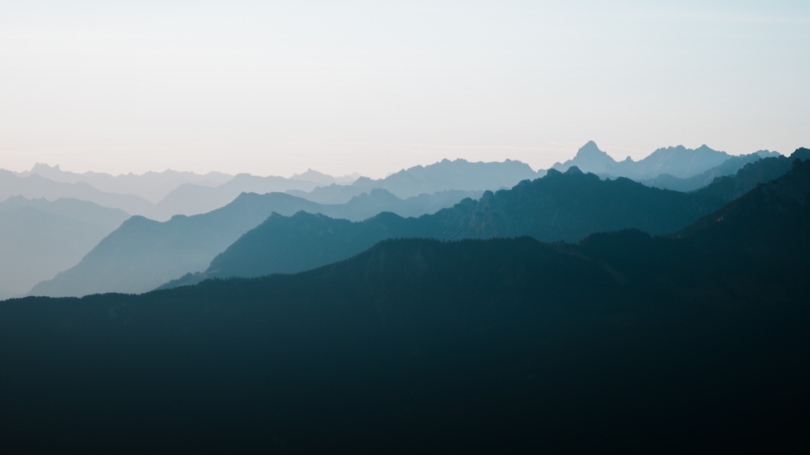

A Switzerland Field Guide · Free Sample
Twenty pages of hand-picked spots beyond the tourist map. Cover, ethos, top picks. The guide opens here.

Wild nights, quiet mornings
Wild camping in Switzerland is a bit of a grey area. Tolerated, usually, if you know the rules.
The general rule of thumb: it is allowed if you are above the treeline and not inside a Naturschutzgebiet (wildlife protection zone). Official rules vary by canton.
When we want the best light for photos or videos, we camp directly at the spot. That way we catch both sunset and sunrise. Set up late, leave early. Stay out of sight. No fires. No noise. Leave no trash behind.
If done right, no one notices and no damage is done. The goal is to be there and gone, leaving nothing but footprints and taking everything with you.